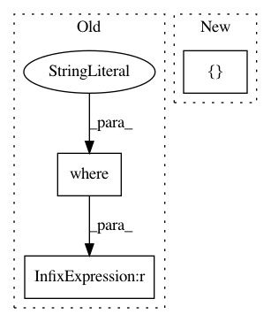

ab4333c6fa5076604d409114824f4a0705fd23e7,recipy/log.py,,log_update,#,91
Before Change
filename = os.path.abspath(filename)
print("Adding %s to %s using $s" % (field, filename, source))
db = TinyDB(DBFILE)
db.update({field: filename}, where("") == RUN_ID)
After Change
filename = os.path.abspath(filename)
print("Adding %s to %s using $s" % (field, filename, source))
db = TinyDB(DBFILE)
db.update(append(field, filename), eids=[RUN_ID])
def append(field, value):
In pattern: SUPERPATTERN
Frequency: 3
Non-data size: 3
Instances
Project Name: recipy/recipy
Commit Name: ab4333c6fa5076604d409114824f4a0705fd23e7
Time: 2015-08-06
Author: r.alegre@ucl.ac.uk
File Name: recipy/log.py
Class Name:
Method Name: log_update
Project Name: recipy/recipy
Commit Name: ab4333c6fa5076604d409114824f4a0705fd23e7
Time: 2015-08-06
Author: r.alegre@ucl.ac.uk
File Name: recipy/log.py
Class Name:
Method Name: log_output
Project Name: recipy/recipy
Commit Name: ab4333c6fa5076604d409114824f4a0705fd23e7
Time: 2015-08-06
Author: r.alegre@ucl.ac.uk
File Name: recipy/log.py
Class Name:
Method Name: log_input